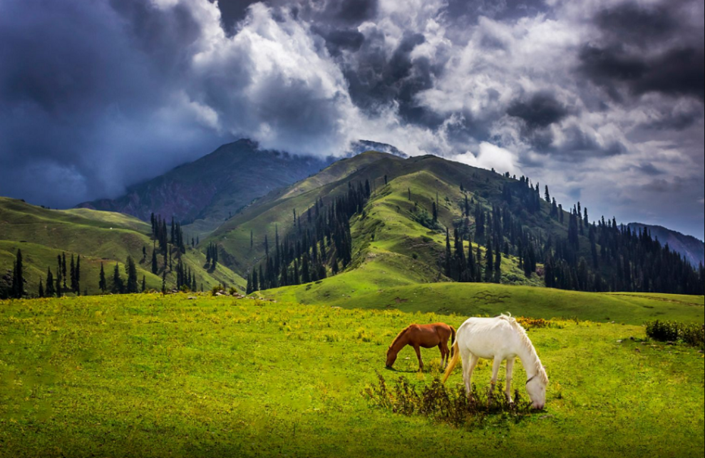
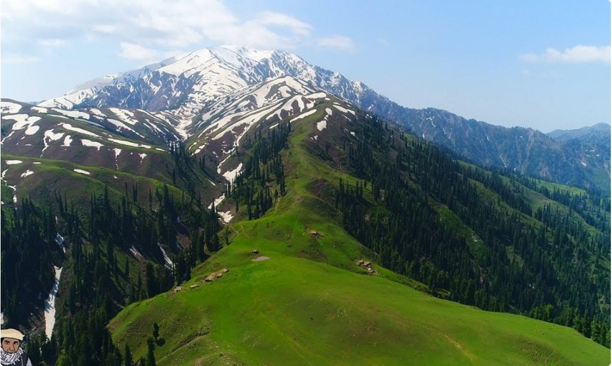
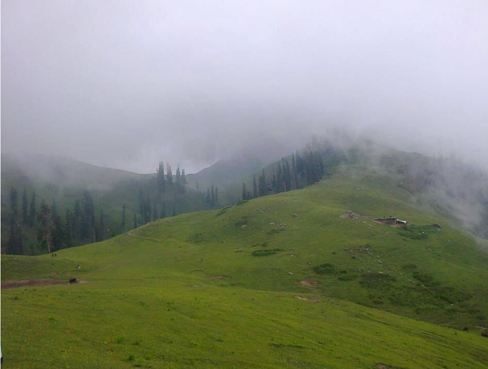
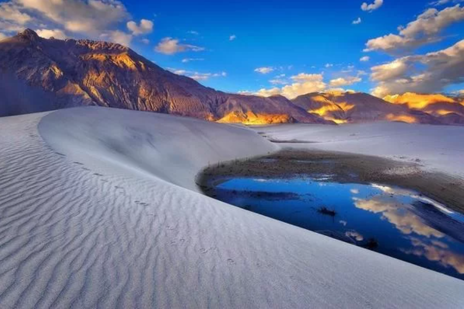
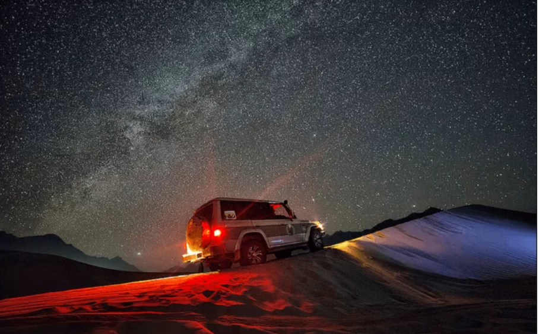
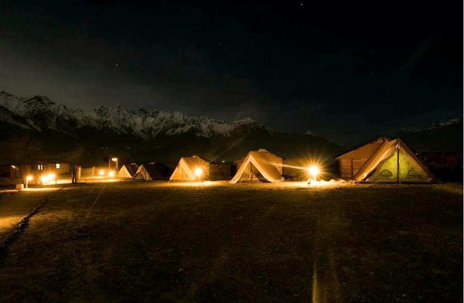
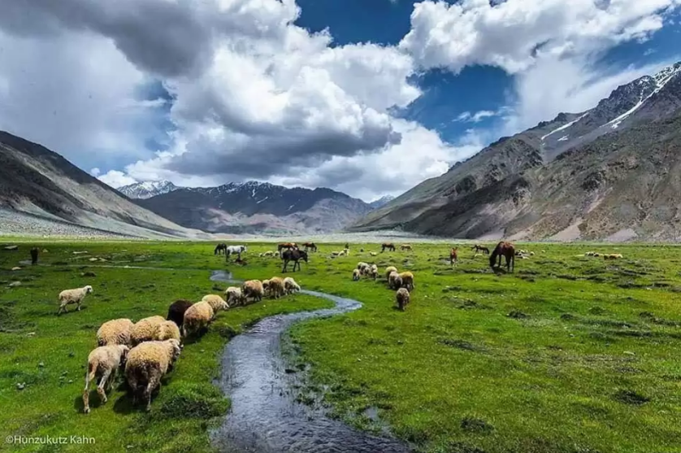
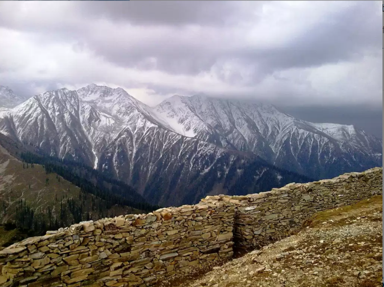
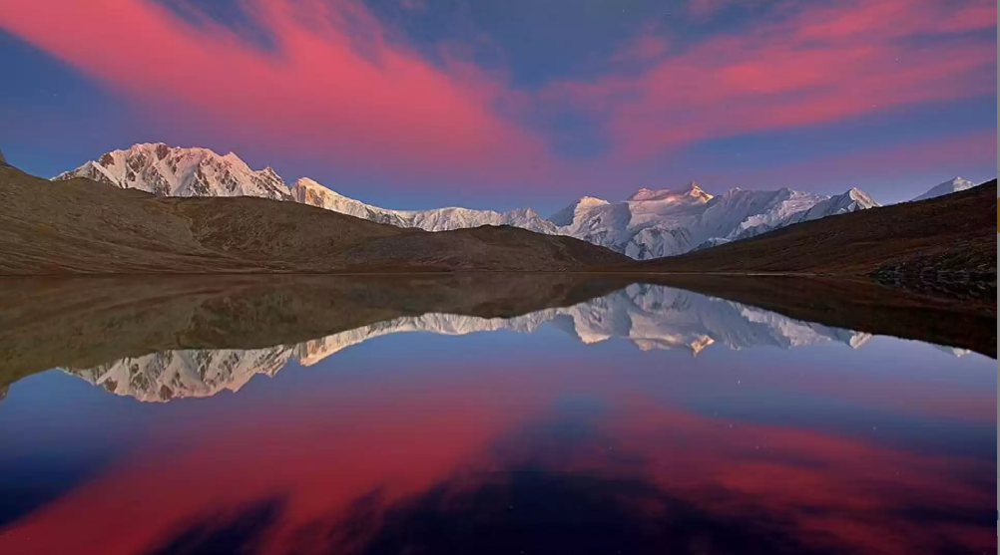

Saiful Muluk is a mountainous lake in northern Pakistan, located at the northern end of the Kaghan Valley, near the town of Naran in the Saiful Muluk National Park. At an elevation of 3,224 m above sea level, the lake is located above the tree line, and is one of the highest lakes in Pakistan.
| |
|
|
Siri Paye is green carpeted land, covered under clouds and mesmerizing scenery of snowy mountains. On your tour to Shogran, must visit Siri Paye Meadows and Siri Lake. Road condition from Shogran to Siri Paye is not too good but this place is worth seeing.
|  |  |  |
The Katpana Desert or Cold Desert is a high-altitude desert located near Skardu in District Shigar, Gilgit-Baltistan, Pakistan. The desert contains large sand dunes that are sometimes covered in snow during the winters
|  |  |  |
Deosai National Park is a high-altitude alpine plain and National Park located between and Skardu District, and in Gilgit-Baltistan, Pakistan. Deosai Plains are situated at an average elevation of 4,114 metres above sea level and considered as the second highest plateaus in the world.
|  |  |  |